🧪 User Guide
GeoSpaX is a browser-based GIS for conservation and spatial analysis. No installation, no login, no plugins. Open geospax.in4metrix.dev and start working.
The fastest way to begin is to drag & drop a file onto the map, or open the 📂 Data Sources panel (left side) and click click to browse. Supported formats:
| Format | Extension | Notes |
|---|---|---|
| GeoJSON | .geojson, .json | RFC 7946. The default format for web GIS. |
| KML / KMZ | .kml, .kmz | OGC KML 2.2. Google Earth compatible. |
| GPX | .gpx | GPX 1.1. GPS tracks, routes, waypoints. |
| Shapefile | .zip | Zipped .shp + .dbf + .prj + .shx. |
| CSV | .csv | Opens a column mapper for lat/lon fields. |
| XLSX | .xlsx, .xls | Excel workbook. Multi-sheet files prompt you to pick a sheet. |
| GeoTIFF | .tif, .tiff | Raster. Style band, colour ramp, min/max in Symbology. |
CSV and XLSX files open a column mapper - pick the latitude, longitude, optional label, and elevation columns, and set the source CRS if your coordinates are projected (e.g. UTM). For XLSX files with multiple sheets, a sheet picker appears first.
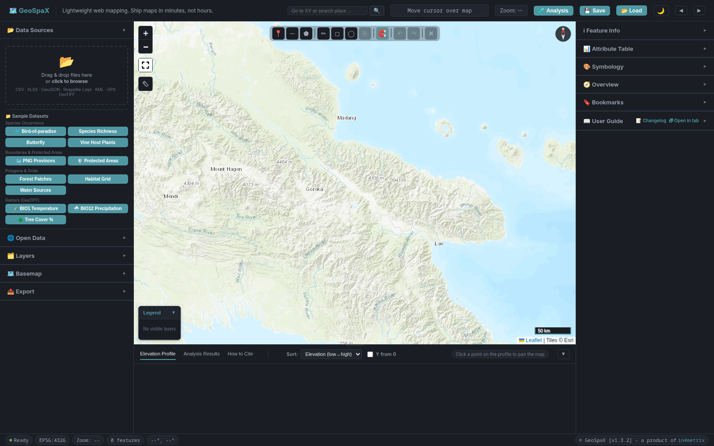
GeoSpaX uses a three-region layout: a top bar, a left panel, a map canvas with a bottom panel, and a right panel.
Top bar
| Icon | Control | Function |
|---|---|---|
| 🗺 | GeoSpaX logo | Click to reload the app |
| 🔍 | Search box | Go to XY or search a place name (see Search & Go To) |
| 🧪 | Analysis | Open the Spatial Analysis drawer (right side) |
| 💾 | Save | Save the entire workspace as a .gspx project file |
| 📂 | Load | Load a previously saved .gspx project file |
| 🌙 | Theme | Toggle dark / light theme |
| ◀ | Collapse left | Hide / show the left panel |
| ▶ | Collapse right | Hide / show the right panel |
Left panel (Data & Layers)
Collapsible sections: Data Sources, Open Data, Layers, Basemap, Export. Drag the right edge to resize.
Right panel (Inspect & Style)
Collapsible sections: Feature Info, Attribute Table, Symbology, Overview, Bookmarks, User Guide. Drag the left edge to resize.
Bottom panel (Results)
Tabbed: Elevation Profile, Analysis Results, How to Cite. Drag the top edge to resize. Collapse with the ▼ button.
Status bar
The bar at the very bottom shows: Ready indicator, current EPSG:4326 reference, Zoom level, visible feature count, and cursor latitude / longitude. The right side shows the GeoSpaX version and a link to in4metrix.
Open the 🌍 Basemap section in the left panel. Choose from 10 basemaps via the dropdown:
| Name | Source | Best for |
|---|---|---|
| Topo | Esri World Topo | General reference, place names |
| Satellite | Esri World Imagery | Land cover, field sites |
| Streets | OpenStreetMap | Urban context, roads |
| Hillshade | Esri Shaded Relief | Elevation, terrain |
| OpenTopoMap | OpenTopoMap | Topographic detail, contours |
| Positron | CartoDB Light | Minimal backdrop for data overlays |
| Dark Matter | CartoDB Dark | Dark theme, data overlays |
| USGS Topo | USGS National Map (WMS) | US topographic detail |
| USGS Imagery | USGS National Map (WMS) | US aerial imagery |
| USGS Shaded Relief | USGS 3DEP (WMS) | US elevation relief |
Adjust basemap opacity with the slider beneath the selector (0-100%). Useful when overlaying dense vector data.
The search box in the top bar accepts three input types:
| Input | Behaviour |
|---|---|
lat, lon (e.g. -6.3, 143.5) | Pans and zooms to those coordinates |
place name (e.g. Mount Hagen) | Geocodes via OpenStreetMap Nominatim and flies to the top match |
| Enter key | Triggers the search |
Cursor coordinates update live in the top bar and the status bar as you move the mouse.
Open the Bookmarks section in the right panel. Save the current map extent under a name you choose.
| Action | How |
|---|---|
| 💾 Save a bookmark | Type a name in the box and click Save |
| 📍 Go to a bookmark | Click the bookmark name in the list |
| 🗑 Delete a bookmark | Click the × next to the bookmark name |
Bookmarks persist for the current session and are included when you save a .gspx project file.
Open the Overview section in the right panel to show a small minimap. The minimap displays the full layer extent with a blue rectangle indicating the current main map viewport.
| Action | How |
|---|---|
| Pan the main map | Click anywhere on the minimap. The main map recenters to the clicked location. |
| Zoom in | Double-click on the minimap. The main map zooms in one level at the clicked location. |
| Track viewport | The blue rectangle updates automatically as you pan or zoom the main map. |
Open the 📂 Data Sources section in the left panel. Drag & drop files onto the dashed zone, or click click to browse.
| Format | Extension | Behaviour on import |
|---|---|---|
| GeoJSON | .geojson, .json | Loaded directly. CRS read from crs property if present. |
| KML / KMZ | .kml, .kmz | Parsed client-side. Folders become separate layers. |
| GPX | .gpx | Waypoints, routes, and tracks each become a layer. |
| Shapefile | .zip | Must contain .shp, .dbf, .shx, and ideally .prj. |
| CSV | .csv | Column mapper opens. Pick lat / lon / label / elevation columns. |
| XLSX | .xlsx, .xls | Sheet picker (if multi-sheet), then column mapper. |
| GeoTIFF | .tif, .tiff | Raster layer. Style in Symbology; reclassify in Raster Reclassify & Polygonize. |
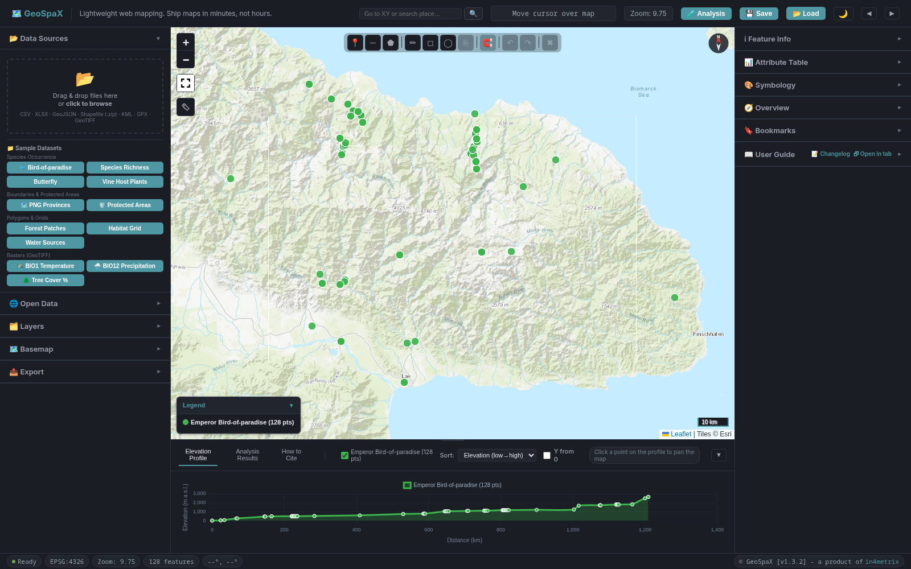
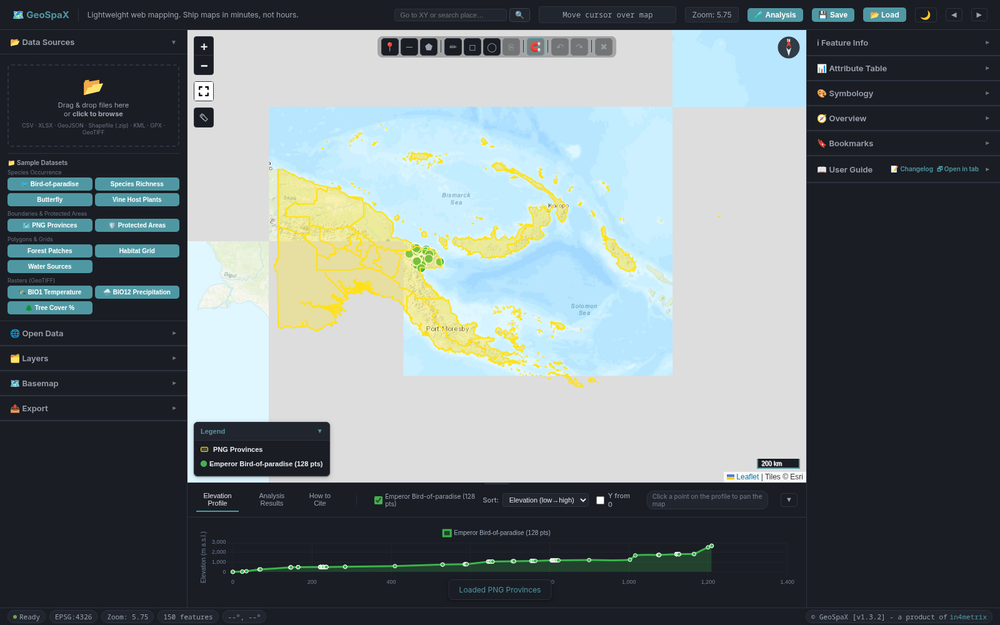
Open the 🌐 Open Data section in the left panel. These connectors fetch free public datasets directly into your map, scoped to the current view.
🌐 OpenStreetMap (Overpass)
Query OSM features in the current map view by tag. Enter a key=value pair (e.g. amenity=school) and click Query OSM Features. Results appear as a new layer named OSM: <tag>.
🗺 Infrastructure & Land Use (one-click OSM)
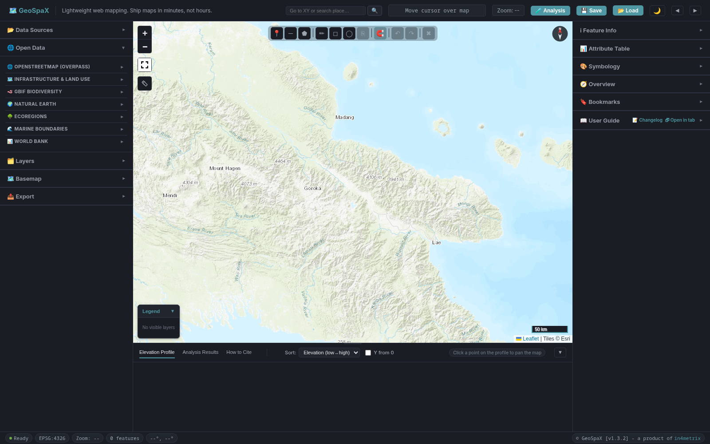

amenity=school in Papua New Guinea. Results appear as a new layer with attributes from the OSM database.Eight pre-built queries for common conservation-relevant features. Each button queries the current map view:
| Button | OSM tags |
|---|---|
| 🛣 Roads | highway = motorway, trunk, primary, secondary, tertiary, residential, unclassified, track |
| 💧 Rivers & Streams | waterway = river, stream, canal, tidal_creek |
| 🏞 Lakes & Ponds | natural = water |
| 🌼 Wetlands & Swamps | natural = wetland |
| ⛰ Mountains & Peaks | natural = peak, volcano, ridge, cliff, saddle |
| 🦾 Conservation Areas | boundary = protected_area, national_park; leisure = nature_reserve |
| 🌲 Forest & Timber | landuse = forest, forestry; natural = wood |
| ⛏ Mining & Quarries | landuse = quarry; man_made = mineshaft; historic = mine |
🪱 GBIF Biodiversity
Search species occurrence records by common or scientific name within the current map view. Enter a taxon (e.g. lion or Panthera leo), set a record limit (1-10000, default 300), and click Search Occurrences. Results appear as point layer GBIF: <taxon> with species, date, and source attributes.
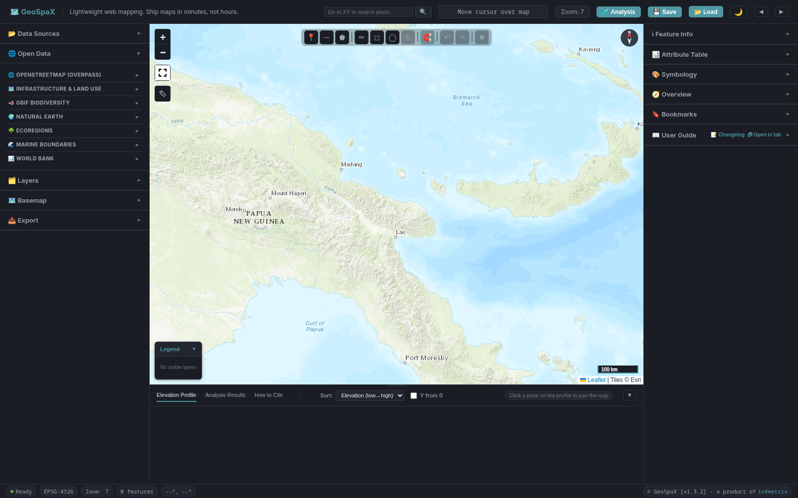
Paradisaea (bird-of-paradise) in Papua New Guinea. Occurrence points appear as a new layer with species, date, and source attributes.🌍 Natural Earth
Add public-domain reference layers (boundaries, rivers, cities). Choose from the dropdown:
| Layer | Resolution |
|---|---|
| Countries | 110m or 50m |
| States / Provinces | 110m |
| Rivers | 110m |
| Lakes | 110m |
| Cities | 10m |
| Geography Regions | 110m |
| Urban Areas | 50m |
🌳 Ecoregions
Add global terrestrial ecoregions from WWF/RESOLVE. One click adds all global ecoregions as a polygon layer.
🌊 Marine Boundaries
Add global marine boundaries and ecoregions from MarineRegions.org:
| Layer | Description |
|---|---|
| Exclusive Economic Zones (EEZ) | Global 200NM zones |
| Territorial Seas 12NM | Global 12NM zones |
| Contiguous Zones 24NM | Global 24NM zones |
| EEZ Boundaries | EEZ boundary lines |
| Marine Ecoregions (MEOW) | Marine Ecoregions of the World |
📊 World Bank
Fetch socioeconomic and environmental indicators for all countries (most recent year). Choose an indicator and click Fetch Indicator Data:

| Indicator | Code |
|---|---|
| Total Population | SP.POP.TOTL |
| GDP (current US$) | NY.GDP.MKTP.CD |
| CO2 Emissions (kt) | EN.ATM.CO2E.KT |
| Forest Area (% of land) | AG.LND.FRST.ZS |
| Protected Land Area (%) | ER.LND.PTLD.ZS |
| Agricultural Land (%) | AG.LND.AGRI.ZS |
| Land below 5m elevation (%) | EN.LND.LTSS.ZS |
| Deaths from unsafe water (per 100k) | SH.STA.WASH.P5 |
Open the 📁 Layers section in the left panel. Each loaded layer appears as a card with controls:
| Control | Icon | Action |
|---|---|---|
| Visibility toggle | 👁 | Show / hide the layer |
| Rename | ✏ | Inline rename (Enter to confirm, Esc to cancel). Double-click name also works. |
| Zoom to layer | 🔍 | Fit map to layer extent |
| View fields | 📄 | Show field names, types, and sample values in a modal |
| Labels | 🏷 | Choose an attribute to show as map labels; set font size |
| Remove | × | Delete the layer |
| Opacity slider | — | Per-layer transparency |
Right-click a layer for more options: 🔍 zoom to layer, ✏ rename, 👁 show/hide, ⬆⬇ move up/down, ⬍ move to top/bottom, 🎨 edit symbology, 📋 open attribute table, 📄 view fields, 🗑 remove layer.
Click the layer name to select it for symbology editing in the right panel.
Layers stack in draw order (top of list = top of map). Drag-and-drop reordering is supported via the right-click menu move options.
Open the 🎨 Symbology section in the right panel. Select a layer from the dropdown at the top of the panel (or click a layer name in the Layer Panel).
Vector symbology
| Mode | Description |
|---|---|
| 🔴 Single Symbol | Fill colour, marker size, opacity, stroke colour / width / style (solid, dashed, dotted, dash-dot). Marker shapes: circle, square, triangle, diamond, star, cross. |
| 🟢 Categorized | One colour per unique value of a chosen attribute. Click legend entries on the map to rename them. |
| 🟡 Graduated | Numeric attribute divided into 2-10 classes along a colour ramp (Viridis, Heat, Cool, Terrain). Choose classification method and number of classes. |
↻ Reset returns the layer to its default style.
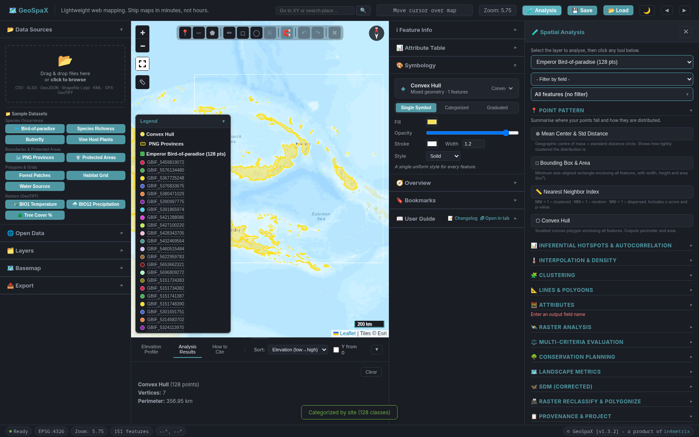
Raster symbology
For GeoTIFF layers, the Symbology panel offers:
| Control | Options |
|---|---|
| Band | Select which band to display (0-based) |
| Colour ramp | Viridis, Heat, Cool, Terrain, Greyscale |
| Min / Max | Stretch range. Click ↻ to reset to actual data range. |
| Render mode | Continuous (smooth gradient) or Classified (discrete steps) |
| Classified | Set number of classes; click Apply to render. Reset to recommended restores defaults. |
Use the floating pencil toolbar (top-center of map, horizontal) to draw Points, Lines, or Polygons.
| Icon | Toolbar button | Function |
|---|---|---|
| 📍 | Point | Click to place a point feature |
| ─ | Line | Click to add vertices; double-click to finish |
| ⬟ | Polygon | Click to add vertices; double-click to close |
| ✏ | Edit | Select and drag existing vertices to reshape; drag feature body to move; double-click vertex to delete |
| ◻ | Rectangle select | Drag to select features in a box |
| ◯ | Circle select | Drag to select features in a circle |
| ⎘ | Duplicate | Copy selected features (Ctrl+D) |
| 🧲 | Snap | Toggle snapping to existing vertices |
| ↶ | Undo | Undo last edit (Ctrl+Z) |
| ↷ | Redo | Redo last undo (Ctrl+Y / Ctrl+Shift+Z) |
| ✖ | Cancel | Cancel / clear selection (Esc) |
A crosshair cursor is shown during digitizing. Press Esc to cancel at any time.
After drawing, fill in the attribute form (name, description, category). Features are saved to the 📁 Drawn Features layer, which is fully exportable.
Open the ℹ Feature Info section in the right panel, then click any feature on the map to open its attribute card. Shows geometry type, lat/lon, and all attributes.
| Button | Action |
|---|---|
| ⬅ Prev / ➡ Next | Navigate through features in the same layer |
| 🔍 Zoom to feature | Pan and zoom the map to the feature |
| 📋 Copy attributes | Copy the full attribute table to clipboard |
| ✖ Clear | Clear the feature info panel |
Open the 📋 Attribute Table section in the right panel. Select a layer from the dropdown. All features appear in a searchable, paginated table (50 rows per page).
| Feature | How |
|---|---|
| 🔍 Search | Type in the Search... box to filter across all columns (instant) |
| ⬆⬇ Sort | Click a column header to sort ascending / descending |
| 📝 Filter expression | Type col > 5 in the filter box and click Filter for expression-based filtering. Click Clear to remove. |
| 📄 Pagination | Use ◀ Prev / Next ▶ buttons at the bottom |
| 📍 Zoom to row | Click any row to zoom to that feature and open it in Feature Info |
Layers with an elevation column (elevation, elev, alt, or z) auto-populate the bottom Elevation Profile tab.
| Axis | Meaning |
|---|---|
| ➕ X-axis | Distance along the track (km) |
| 📈 Y-axis | Elevation (m a.s.l.). Y starts from 0 by default. |
Profile controls
| Control | Function |
|---|---|
| Layer checkboxes | Toggle layers on/off in the profile |
| Sort dropdown | Elevation (low→high), West→East, South→North, or Survey order |
| Y from 0 checkbox | Force Y-axis to start at 0 (default on). Uncheck to auto-scale Y to data range. |
| 📍 Click a point on chart | Pan the map to that location |
| Drag top edge of panel | Resize the bottom panel |
| ▼ Collapse button | Hide / show the bottom panel |
Profile export
Open the 📈 Elevation Profile subsection in the Export panel (left) to export the profile as:
| Format | Button |
|---|---|
| 🖼 PNG image | Profile as PNG |
| 📄 PDF page | Profile as PDF |
| 🗾 SVG vector | Profile as SVG |
Open the 💾 Export section in the left panel. Four subsections: Map Image, Elevation Profile, Bulk Data Export, and Per-Layer Export.
🗺 Map Image
| Button | Description |
|---|---|
| 🖼 Export as PNG | Current viewport as a PNG image. Opens an export dialog with title, legend, north arrow, and scale bar options. |
| 📄 Export as PDF | Same content as a PDF page. |
Click Preview in the export dialog to open the Map Layout Composer for full layout control (see below).
📈 Elevation Profile
Export the current elevation profile as PNG, PDF, or SVG (see Elevation Profile section above).
📦 Bulk Data Export (all layers)
| Button | Description |
|---|---|
| 🗃 Export all as GeoJSON | Every layer as a separate .geojson file (zipped) |
| 📊 Export all points as CSV | All point layers combined into one CSV |
| 📊 Export all as XLSX | Every layer as a sheet in one Excel workbook |
📄 Per-Layer Export
Export a single layer in a chosen format and CRS:
- Select the layer from the dropdown
- Set the Output filename (without extension). A suggested name is pre-filled based on the layer name.
- Choose the Output CRS. Default is WGS 84 (EPSG:4326). UTM auto-detect suggests the correct zone for the layer extent.
- Choose the Format:
| Format | Standard | Notes |
|---|---|---|
| 📄 GeoJSON | RFC 7946 + named CRS | Read by QGIS & ArcGIS |
| 📋 CSV | Flat table | Longitude / latitude columns |
| 📄 XLSX | Excel workbook | One sheet per export |
| 📦 Shapefile | ESRI Shapefile | Zipped .shp / .dbf / .prj / .shx |
| 🌐 KML | OGC KML 2.2 | Google Earth, ArcGIS Earth |
| 🧭 GPX | GPX 1.1 | GPS devices, Garmin, OsmAnd |
Click 💾 Export Layer to download.
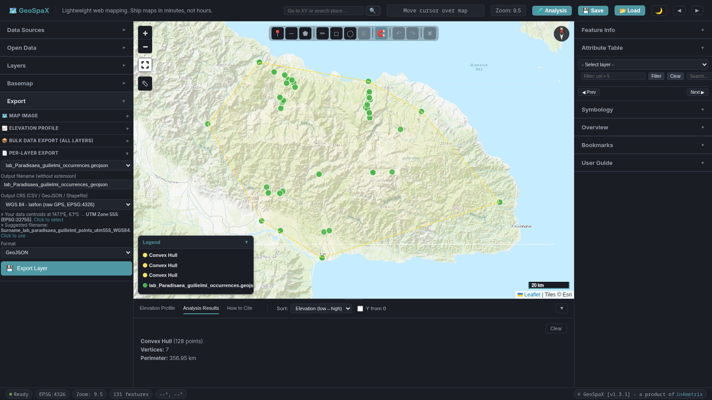
The Map Layout Composer is a full print-layout tool comparable to the QGIS Print Layout or ArcGIS Layout View. Open it from the Export panel: Map Image → Export as PNG/PDF → Preview.
The composer has a collapsible sidebar (left) with sections, a paper preview area (right), and a footer with action buttons.
Sidebar sections
| Section | Controls |
|---|---|
| 🗺 Map | Lock/unlock main map (locked = mirrors source map; unlocked = independent pan/zoom). Basemap override. Auto-update toggle. |
| 📄 Paper | Paper size (Custom 16:9, A4, A3, Letter, Tabloid - each in landscape or portrait). Background colour. Snap-to-grid toggle and grid size. |
| 📝 Title & Text | Map title and subtitle text. Toggle scale text (e.g. 1:50,000), date, and spatial reference (EPSG). |
| 🗺 Gridlines | Toggle coordinate gridlines (graticule). Coordinate label format (DD, DMS, DM). Grid interval override (blank = auto). |
| 📏 Scale Bar | Style: Single Box, Double Alternating, Line + Ticks, Stepped Line, Hollow, Numeric Only. Card background toggle. |
| 🧭 North Arrow | Style: Classic (half/half), Simple triangle, Compass rose, Arrow only, None. |
| 🗺 Overview | Lock/unlock overview inset (locked = automatic fit; unlocked = independent pan/zoom). |
| 📋 Legend | Legend title and subtitle. Toggle, rename, or reorder legend items. Drag the legend box by its title; drag the corner dot to resize. |
| 💾 Export | Format (PNG or PDF). Resolution (96 / 150 / 300 / 600 DPI). Map extent (Current view or Fit to layers). Include legend toggle. Source attribution toggle. |
| 📁 Templates | Save and load layout configurations by name. |
Footer buttons
| Button | Action |
|---|---|
| ↻ Refresh | Pick up layer, symbology, and basemap changes without losing your layout |
| ⧉ Detach | Open the composer in its own window (drag to a second monitor). The source map stays in the main window. |
| 💾 Export PNG | Export the layout as PNG at the chosen DPI |
| Close | Close the composer (attached mode only) |
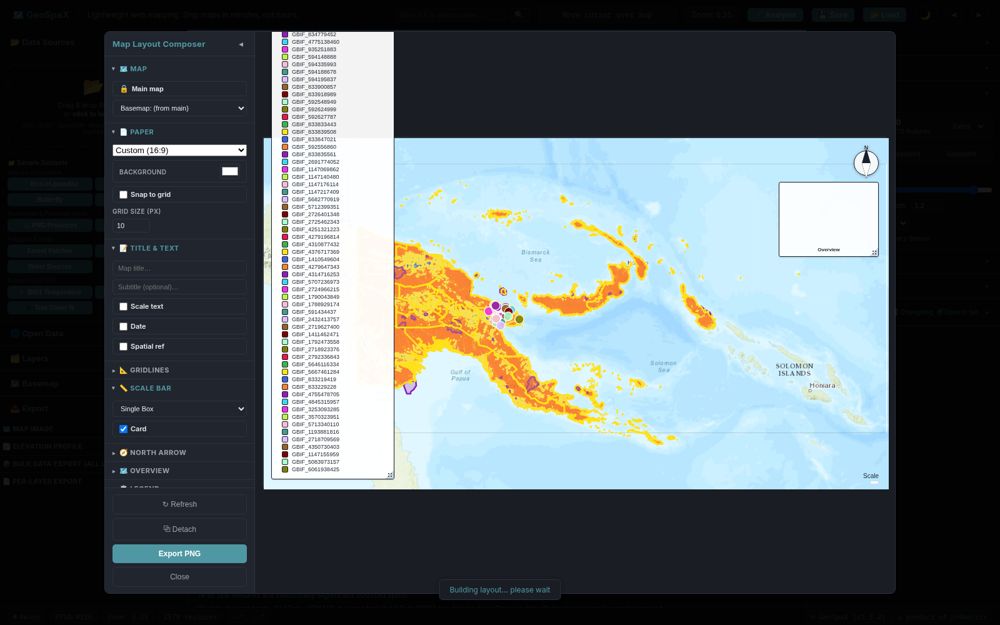
Click the 🧪 Analysis button in the top bar (or press A) to open the Analysis drawer on the right side. The drawer contains 13 collapsible sections:
| Section | Icon | What it does |
|---|---|---|
| Point Pattern | 📍 | Summarise where points fall and how they are distributed |
| Inferential Hotspots & Autocorrelation | 📊 | Statistically test where high and low values cluster |
| Interpolation & Density | 🌡 | Visualise continuous surfaces from point data |
| Clustering | 🧩 | Find groups in point data without specifying cluster count |
| Lines & Polygons | 📐 | Geometric operations on any geometry type |
| Attributes | 🧮 | Calculate a new field from existing attributes |
| Raster Analysis | 🛰 | Load GeoTIFFs for styling and reclassification |
| Multi-Criteria Evaluation | ⚖ | Combine vector layers into composite scores |
| Conservation Planning | 🌳 | Vector overlay, protection gap, priority areas, WLC suitability |
| Landscape Metrics | 🗺 | Area reporting, fragmentation, connectivity, change detection |
| SDM (Corrected) | 🦋 | BIOCLIM and Mahalanobis species distribution models |
| Raster Reclassify & Polygonize | 📠 | Convert raster to binary mask, then to vector polygons |
| Provenance & Project | 📋 | Track data lineage and export provenance reports |
At the top of the drawer, select a Layer and (for some tools) an Attribute. Results appear in the bottom Analysis Results tab and are added as new exportable layers.
Click Clear in the Analysis Results tab to remove all analysis overlays from the map.
Select a layer and run any tool. Results appear in the bottom panel and are added as exportable layers.
| NNI | Interpretation |
|---|---|
NNI < 1 | 🔴 Clustered (sites are closer together than random) |
NNI ≈ 1 | ⚪ Random |
NNI > 1 | 🟢 Dispersed (regularly spaced) |
p < 0.05 + NNI < 1 = statistically significant clustering.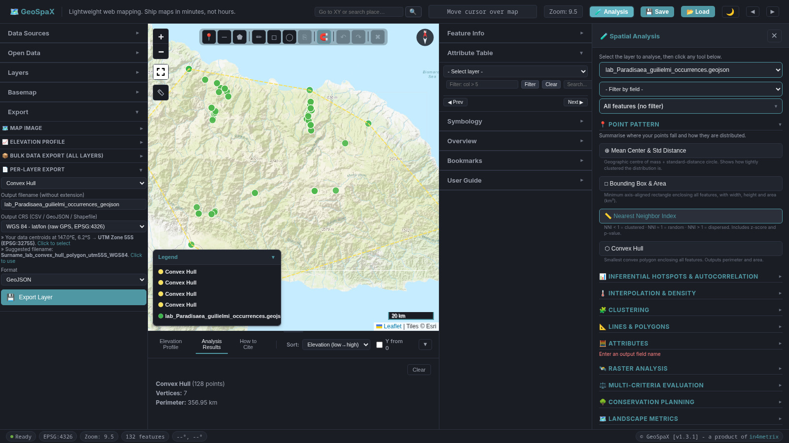
length_km attribute; total is shown in the results panel.area_km2; accurate to < 0.3% at continental scale. Total shown in results.cluster attribute. Use DBSCAN first to explore groupings, then run Gi* or LISA for significance-tested hot spots.These four tools test whether spatial patterns are statistically significant and identify which specific features are driving them. All tools share common Weights and UTM projection settings.
Spatial Weights Options
| Option | Description |
|---|---|
| 📏 Distance band | Two features are neighbours if they are within d km. Default: the minimum distance that gives every feature at least one neighbour. Best for regular grids or continuous fields. |
| 🗺 K-nearest neighbours (KNN) | Each feature's k nearest features are its neighbours (default k = 8). Every feature always gets exactly k neighbours regardless of density. Best for irregular sampling or variable-density data. |
| 🛰 UTM auto-projection | Distances are computed on an auto-selected UTM zone (not raw degrees), removing distortion near the equator and at high latitudes. |
| ⚖ FDR correction | Benjamini-Hochberg False Discovery Rate adjustment prevents spurious hot spots when many features are tested at once. Leave it checked for confirmatory analysis; uncheck only for exploratory work. |
| Colour | Class | z-score | Meaning |
|---|---|---|---|
| Deep red | 99% hot spot | z ≥ 2.58 | Extremely strong evidence of a high-value cluster |
| Red | 95% hot spot | z ≥ 1.96 | Strong evidence |
| Orange | 90% hot spot | z ≥ 1.65 | Moderate evidence |
| Grey | Not significant | — | No evidence of unusual clustering |
| Light blue | 90% cold spot | z ≤ −1.65 | Moderate evidence of a low-value cluster |
| Blue | 95% cold spot | z ≤ −1.96 | Strong evidence |
| Dark blue | 99% cold spot | z ≤ −2.58 | Extremely strong evidence of a low-value cluster |
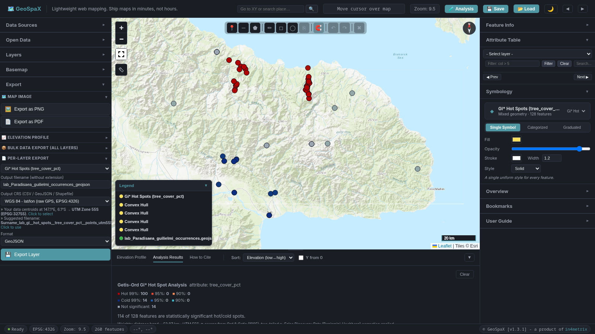
| Colour | Class | Meaning |
|---|---|---|
| HH - High-High | Cluster | High value surrounded by high neighbours. Core of a spatial hot spot. Prioritise for protection. |
| LL - Low-Low | Cluster | Low value surrounded by low neighbours. Core of a spatial cold spot. Investigate cause (degradation, edge effect, microclimate). |
| HL - High-Low | Outlier | High value surrounded by low neighbours. Often a micro-refugium or remnant patch; high conservation value per unit area. |
| LH - Low-High | Outlier | Low value surrounded by high neighbours. Unexpectedly depauperate patch within a rich landscape; potential degradation signal. |
| Grey | Not significant | Pseudo-p > 0.05 (or FDR threshold). |
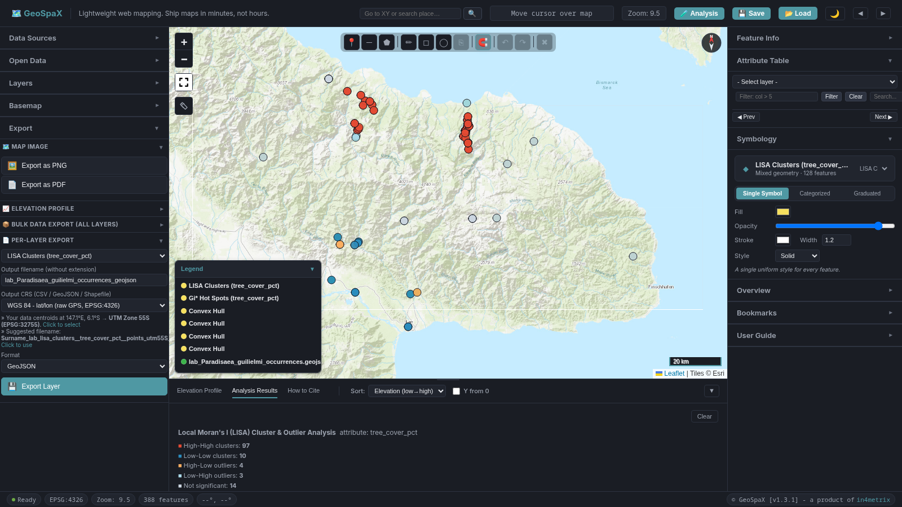
| Result | Description |
|---|---|
| Moran's I | Observed index (roughly −1 to +1, but not strictly bounded) |
| Expected I | −1/(n−1); the mean under spatial randomness |
| Variance | Cliff & Ord randomisation variance |
| z-score | (I − E[I]) / √Var(I) |
| p-value | Two-tailed probability under H₀: no spatial autocorrelation |
| Result | Interpretation |
|---|---|
I >> E[I], z > 1.96, p < 0.05 | 🔴 Positive autocorrelation - similar values cluster together. This confirms that Gi* and LISA results are meaningful. |
I ≈ E[I] | ⚪ Random - no global spatial structure detected. |
I << E[I], z < −1.96, p < 0.05 | 🟢 Negative autocorrelation - dissimilar values are neighbours (checkerboard pattern). |
| Quadrant | Meaning |
|---|---|
| 🔴 Upper-right (HH) | High value, high-value neighbours. Positive autocorrelation (hot-spot core). |
| 🔵 Lower-left (LL) | Low value, low-value neighbours. Positive autocorrelation (cold-spot core). |
| 🟡 Upper-left (LH) | Low value, high-value neighbours. Spatial outlier. |
| 🟢 Lower-right (HL) | High value, low-value neighbours. Spatial outlier. |
Open the 🧮 Attributes section in the Analysis drawer. Select a layer. Create a new attribute from values already in the table. Two modes:
| Mode | Description |
|---|---|
| ⚖ Weighted conditions | Each row is a test on a numeric field plus a weight; the score is the sum of weights where tests pass (otherwise 0 unless you set an Otherwise value). 1-8 rows. |
| 📝 Expression | Type a formula using field names and the functions listed below. |
Output settings
- Output field name - the new column name (e.g.
score) - Output type - Integer, Decimal, or Text
- Style layer on this field - automatically apply graduated (numeric) or categorized (text) symbology
Expression mode
+ - * / % && || ! ? : ( ) > >= < <= == != (single = also works as equals).Fields: Plain names (
elevation_m) or double-quoted ("tree_cover_pct") as in QGIS; single quotes make text literals.
| Function | Description |
|---|---|
abs min max round(x[,n]) floor ceil | Basic math |
sqrt log exp pow | Powers and logs |
coalesce(a,b,…) isnull(x) | Null handling |
if(cond,a,b) | Conditional |
length(s) concat(a,b,…) | String operations |
lower upper | Case conversion |
to_int to_num to_text | Type conversion |
CASE WHEN "elev" >= 500 AND "elev" <= 1800 THEN 1 ELSE 0 END becomes (elev >= 500 && elev <= 1800 ? 1 : 0)
| # | Example | Purpose |
|---|---|---|
| 1 | (elev >= 500 && elev <= 1800 ? 1 : 0) + (cover >= 70 ? 1 : 0) + (rain >= 2500 ? 1 : 0) | Index / proxy score |
| 2 | (cover >= 80 ? 1 : 0) | Binary flag |
| 3 | rain / (elev + 1) | Ratio |
| 4 | concat(site, ' (', to_text(round(cover,0)), '%)') | Label |
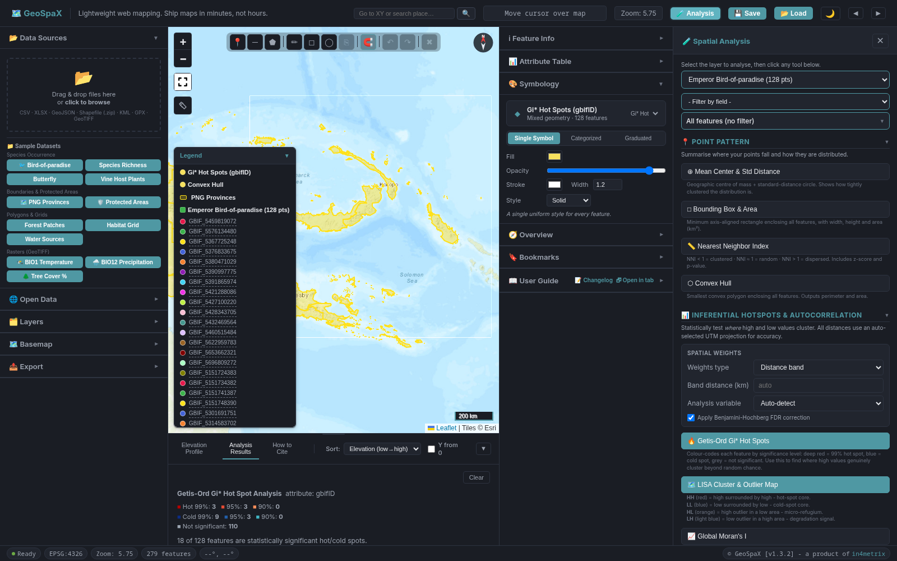
Open the 🛰 Raster Analysis section in the Analysis drawer to load a GeoTIFF, or simply drop a .tif file onto the map, or use the main Import button.
- Click Select GeoTIFF and choose a
.tifor.tifffile - Enter a Layer Name (e.g.
elevation) - Click Load GeoTIFF
Once loaded, style the raster in the 🎨 Symbology panel (band, colour ramp, min/max, continuous or classified). Use 📠 Raster Reclassify & Polygonize (below) for thresholding.
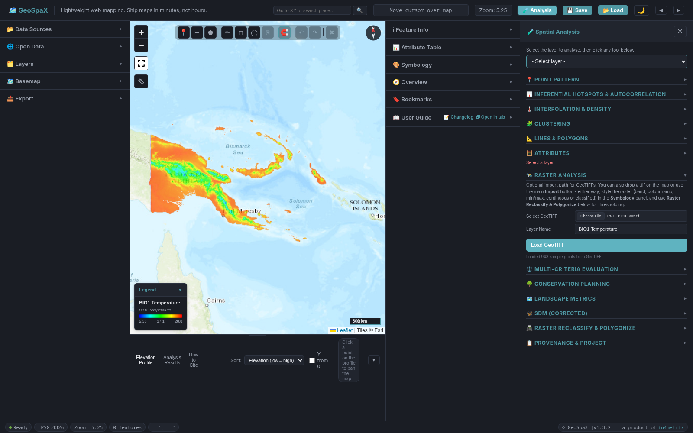
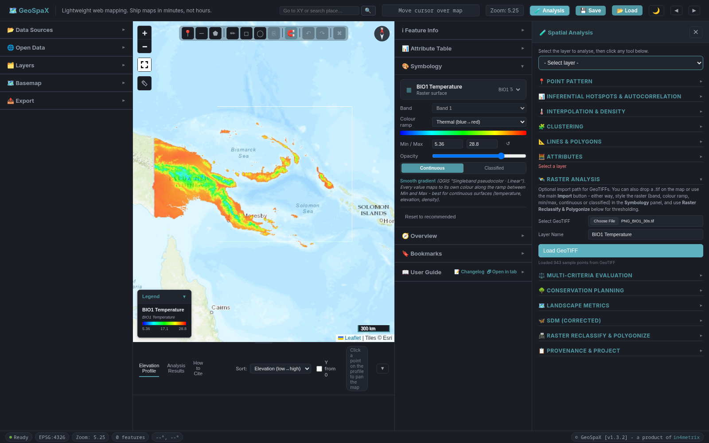
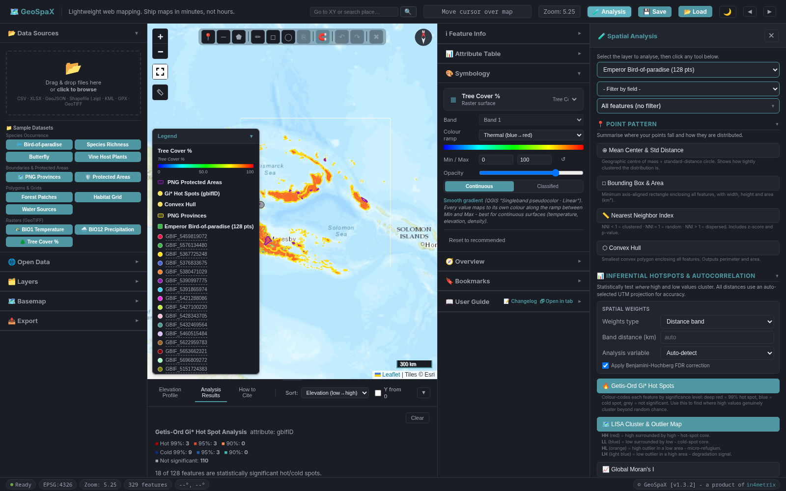
Open the ⚖ Multi-Criteria Evaluation section in the Analysis drawer. Combine multiple vector layers into composite scores using weighted overlays. Equivalent to ArcGIS Weighted Overlay / QGIS MCDA.
Conservation Hotspot Grid
Score a hex or square grid by the number or density of features from each layer - reveals multi-layer biodiversity concentrations.
| Parameter | Options |
|---|---|
| Grid Type | Hexagonal or Square |
| Cell Size (degrees) | Default 0.5. Smaller = finer grid. |
| Score Method | Feature Count, Density, or Presence/Absence |
| Layer Weights | Set a weight per layer. Click ↻ Refresh Layers to populate the table after adding/removing layers. |
Click Run Hotspot Grid. Output is a new grid layer with a score attribute, styled by graduated symbology.
Open the 🌳 Conservation Planning section in the Analysis drawer. Vector overlay toolkit, protection-gap reporting, and weighted linear combination (WLC) suitability mapping.
Vector Overlay
Union, intersect, or erase the two selected layers (A and B). Select layers A and B at the top of the drawer, choose an operation, and click Run Overlay.
| Operation | Result |
|---|---|
| Union | All area from both layers |
| Intersect | Only the area where A and B overlap |
| Erase (A minus B) | Area in A that is not in B |
Protection Gap
Measures how much of layer A (e.g. forest extent) is covered by layer B (e.g. protected areas). Click Run Protection Gap. The report shows total area of A, area inside B, percentage protected, and gap area.
Priority Area Identification
Find high-quality habitat points (based on a score field) that fall OUTSIDE existing protected areas. These are the sites most in need of new conservation action.
| Parameter | Description |
|---|---|
| Habitat layer | Point layer with a habitat score field |
| Protected areas layer | Polygon layer of protected areas |
| Score field | Numeric field to threshold (default habitat_score) |
| Minimum habitat score | Only points at or above this value are considered |
Click ↻ Refresh layers to populate dropdowns after adding layers. Click Identify Priority Areas to run.
Suitability Mapping (WLC)
Weighted Linear Combination suitability mapping. Each criterion is a layer with a weight and a suitability transformation. A constraint layer forces suitability to 0.
| Parameter | Description |
|---|---|
| Cell size (m) | Output raster resolution. Default 500m. Cell count updates live. |
| Criteria | Each row: layer, weight, suitability function. Click ↻ Refresh criteria to repopulate. |
| Constraint layer | Polygon layer that forces suitability to 0 inside it (e.g. existing urban areas). |
Click Run WLC Analysis. Output is a suitability raster layer.
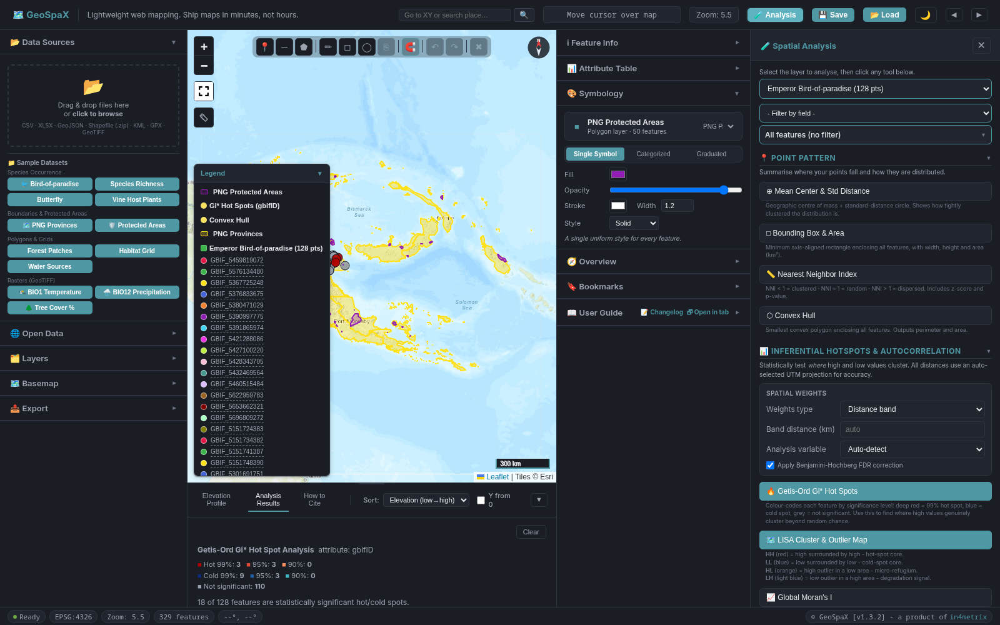
Open the 🗺 Landscape Metrics section in the Analysis drawer. Equal-area reporting, patch fragmentation, connectivity graph, and two-date change detection.
Area Reporting
| Setting | Options |
|---|---|
| Units | Hectares (ha), Square kilometres (km²), Square metres (m²) |
| Method | Spherical (WGS84) or Equal-area (LAEA, auto-centred) |
Fragmentation & Patch Metrics
Calculate patch count, mean patch size, total edge, core area, and more for a polygon layer.
| Parameter | Description |
|---|---|
| Core-area edge depth (m) | Width of the edge buffer stripped from each patch to define core area. Default 100m. |
| Dissolve touching patches first | Merge adjacent polygons into single patches before computing metrics. |
Click Run Patch Metrics.
Connectivity
Build a connectivity graph linking patches within a threshold distance.
| Parameter | Description |
|---|---|
| Link threshold (m) | Two patches are linked if their edges are within this distance. Default 500m. |
Click Build Connectivity Graph. Output is a line layer of links and a report of graph statistics.
Forest Change Detection
Compare two polygon extents (T1 = earlier, T2 = later) to compute deforestation, afforestation, and persistence.
| Parameter | Description |
|---|---|
| Year T1 | Label for the earlier extent (e.g. 2015) |
| Year T2 | Label for the later extent (e.g. 2025) |
Select layer 1 (earlier) and layer 2 (later) at the top of the drawer. Click Detect Change. Output is a polygon layer classifying each area as loss, gain, or persistent.
Open the 🦋 SDM (Corrected) section in the Analysis drawer. BIOCLIM and Mahalanobis with correct environmental sampling, guards, and chi-square output.
Shared settings
| Parameter | Description |
|---|---|
| Presence layer (points) | Point layer of species occurrence records |
| Cell size (m) | Output raster resolution. Default 1000m. |
| Environmental layers | One or more raster layers used as predictor variables |
BIOCLIM
Classic bioclimatic envelope model. For each cell, compares its environmental values to the distribution of values at presence points.
| Mode | Description |
|---|---|
| Limiting factor (true BIOCLIM) | Suitability = the minimum percentile match across all environmental layers. This is the original BIOCLIM algorithm. |
| Proportion in envelope (non-standard) | Fraction of environmental layers where the cell falls inside the presence envelope. Not standard BIOCLIM. |
Click Run BIOCLIM. Output is a suitability raster (0-1).
Mahalanobis
Mahalanobis distance from the multivariate mean of the presence points. Accounts for correlations between environmental variables.
| Output | Description |
|---|---|
| Chi-square probability | Transforms Mahalanobis distance to a 0-1 suitability via the chi-square distribution. Recommended. |
| 1/(1+D) index | Simple inverse-distance index. Faster but less interpretable. |
Click Run Mahalanobis. Output is a suitability raster.
Open the 📠 Raster Reclassify & Polygonize section in the Analysis drawer. Convert a GeoTIFF raster to a binary mask via threshold, then polygonise to vector polygons.
- Select the Raster layer from the dropdown
- Set the Band (0-based). Click Histogram + Otsu to view the distribution and auto-suggest a threshold.
- Set the Threshold value and choose the comparison operator (≥, >, ≤, <)
- Tick Merge into patches to dissolve adjacent true-cells into single polygons
- Click Reclassify & Polygonize
Output is a polygon layer where each polygon represents a contiguous region of cells that pass the threshold test.
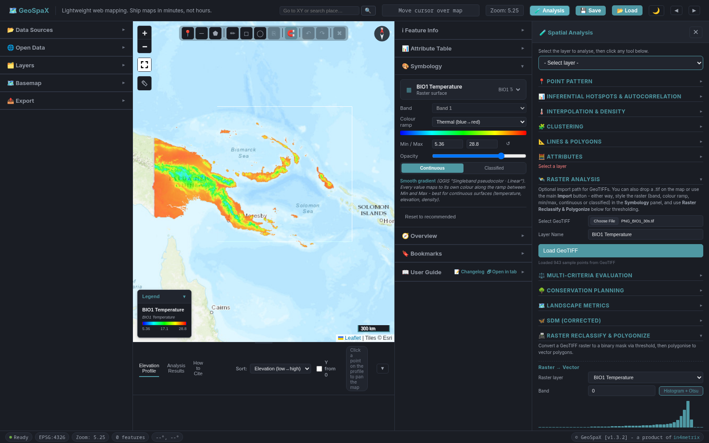
💾 Save & 📂 Load (.gspx)
Use the 💾 Save and 📂 Load buttons in the top bar to save and load the entire workspace as a .gspx project file. The file contains all layers, symbology, digitized features, bookmarks, and analysis results in JSON format.
| Action | How |
|---|---|
| 💾 Save project | Click 💾 in the top bar. A dialog appears with a filename input (pre-filled with projectId_subject.gspx). Edit the name and click Save. In Chrome and Edge, the browser's native Save As dialog then opens so you can choose the folder. In Firefox and Safari, the file is saved to your Downloads folder. |
| 📂 Load project | Click 📂 in the top bar and choose a .gspx or .json file. |
Provenance & Project metadata
Open the 📋 Provenance & Project section in the Analysis drawer.
| Field | Description |
|---|---|
| Author name | Your name, embedded in the project file and provenance report |
| Project ID | A short identifier for the project |
| Subject / topic | e.g. "Forest cover change" |
| Project title | Full project title |
The Data Provenance table lists every loaded layer with its source, import date, and row count. Export the provenance report as:
| Format | Button |
|---|---|
| 📋 CSV | Export CSV |
| 📝 Markdown | Export Markdown |
Open the How to Cite tab in the bottom panel. GeoSpaX provides ready-formatted citations in four styles: APA (7th ed.), Chicago (17th ed.), Harvard, and BibTeX. Each has a Copy button.
Citation follows the FORCE11 Software Citation Principles. For reproducibility, always include the version number (v1.3.2) and access date.
https://geospax.in4metrix.dev/) as the persistent identifier.
| Shortcut | Action |
|---|---|
| + / − | 🔍 Zoom in / out |
| F | ⛶ Toggle fullscreen |
| L | ◀ Toggle left panel |
| A | 🧪 Toggle Analysis drawer |
| Esc | ✕ Cancel digitizing / close modals / close Analysis drawer |
| Enter | ✓ Confirm inline layer rename |
| Ctrl+Z | ↩ Undo (digitizing edits) |
| Ctrl+Y / Ctrl+Shift+Z | ↪ Redo |
| Ctrl+D | 📋 Duplicate selected features |
| Term | Definition |
|---|---|
| CRS | Coordinate Reference System. The mapping from coordinates on a flat surface to positions on the Earth. GeoSpaX uses WGS 84 (EPSG:4326) for storage, Karney's geodesic algorithms (GeographicLib) for measurement and area, and auto-selects UTM for spatial statistics that require a planar coordinate system. |
| EPSG | European Petroleum Survey Group. Maintains the registry of standard CRS codes (e.g. EPSG:4326 = WGS 84). |
| UTM | Universal Transverse Mercator. A projected CRS that divides the Earth into 60 zones, each 6 degrees of longitude wide. Distances in UTM are in metres with minimal distortion. |
| GeoJSON | A JSON-based format for encoding geographic data. RFC 7946 standard. |
| GeoTIFF | A TIFF file with embedded georeferencing information. Used for raster data like elevation and satellite imagery. |
| Spatial autocorrelation | The tendency for nearby features to have similar values. Measured by Moran's I (global) and LISA (local). |
| Hot spot / cold spot | A cluster of high values (hot) or low values (cold) that is statistically significant, identified by Getis-Ord Gi*. |
| FDR | False Discovery Rate. A statistical correction that controls the expected proportion of false positives when many tests are performed simultaneously. |
| WLC | Weighted Linear Combination. A multi-criteria evaluation method that combines weighted suitability layers into a single suitability map. |
| BIOCLIM | A bioclimatic envelope model that predicts species suitability from environmental variable distributions at presence points. |
| Mahalanobis distance | A multivariate distance measure that accounts for correlations between variables and is scale-invariant. |
| Provenance | The lineage of a dataset: where it came from, how it was processed, and what transformations were applied. |
| .gspx | GeoSpaX project file format. A JSON file containing all layers, styles, digitized features, and bookmarks. |
Getting started
Q: Do I need to install anything?
No. GeoSpaX runs entirely in your browser. Open https://geospax.in4metrix.dev/ and start working. There is no backend server, no login, and no installation step.
Q: Which browsers are supported?
GeoSpaX works in modern Chrome, Firefox, Edge, and Safari. JavaScript must be enabled. On some Linux/GTK browser builds, native dropdown popups may not paint; GeoSpaX includes a custom dropdown replacement (gsx-select.js) that handles this automatically.
Q: Does GeoSpaX work offline?
After the initial page load, all third-party libraries are vendored locally (no CDN). The only runtime network requests are basemap tiles, the Nominatim geocoder, epsg.io CRS definitions, and the open data APIs (Overpass, GBIF, World Bank). Your data never leaves your browser.
Q: How do I get sample data to try the tools?
Open Data Sources in the left panel and click any button in the Sample Datasets section. The sample datasets include species richness (41 points across two PNG montane transects, designed to produce clear hot-spot and autocorrelation results), butterfly presences, forest patches, a habitat survey grid, stream water sources, vine host plants, and a WorldClim BIO1 GeoTIFF raster.
Data and formats
Q: Why does my Shapefile import fail?
GeoSpaX requires a .zip bundle containing .shp, .dbf, .prj (and optionally .shx). A bare .shp file is not supported because the accompanying files are needed for attributes and CRS. Zip the folder containing all component files and drag the .zip onto the map.
Q: My CSV has coordinates but they are not in latitude/longitude. What do I do?
When you import a CSV or XLSX, a column mapper dialog appears. Set the Source CRS to match your data (e.g. UTM zone 55S for Papua New Guinea). GeoSpaX will reproject the coordinates to WGS 84 (EPSG:4326) on import using proj4js.
Q: What is the maximum file size?
There is no hard limit, but performance depends on your browser's memory. Files under 50 MB generally load instantly. Files over 200 MB may take several seconds and can be slow to render. Very large GeoTIFFs are tiled on the fly by GeoRaster.
Q: Can I import data from ArcGIS or QGIS?
Yes. Export your data from ArcGIS or QGIS as GeoJSON, Shapefile (zip), KML, or CSV and import it into GeoSpaX. For raster data, export as GeoTIFF.
Coordinate reference systems
Q: What CRS does GeoSpaX use internally?
All data is stored and displayed in EPSG:4326 (WGS 84). Imported data in other CRS is reprojected client-side using proj4js. The Export panel's Output CRS selector reprojects on export.
Q: Why do distance-based statistics use UTM?
Raw latitude/longitude degrees are angular, not linear. Computing distances in degrees gives wrong results. GeoSpaX uses two approaches: (1) for measurement, line-length, and polygon-area tools, it uses Karney's geodesic algorithms (GeographicLib) on the WGS84 ellipsoid for sub-millimetre accuracy; (2) for spatial statistics (Getis-Ord Gi*, LISA, Global Moran's I, NNI, DBSCAN), it auto-selects the appropriate UTM zone and projects coordinates into metres on a planar grid, because those methods require a flat coordinate system. UTM distortion is minimal within a single zone.
Q: How do I choose the right output CRS for export?
For general sharing, use EPSG:4326 (WGS 84). For area-preserving analysis within a single country, use the local UTM zone (e.g. UTM 55S for Papua New Guinea mainland). For web mapping, use EPSG:3857 (Web Mercator). GeoSpaX auto-detects the UTM zone from your data extent.
Analysis and statistics
Q: What is the difference between a hot spot (Getis-Ord Gi*) and a HH cluster (LISA)?
Gi* identifies clusters of high or low values relative to the global mean. LISA classifies each feature by its value and its neighbours' values into four types: HH (high-high), LL (low-low), HL (high-low outlier), LH (low-high outlier). A Gi* hot spot is usually also a LISA HH cluster, but not always - LISA additionally flags spatial outliers that Gi* does not.
Q: Should I use FDR correction?
Leave Apply FDR correction checked (default) for confirmatory analysis. The Benjamini-Hochberg procedure controls the false discovery rate when many features are tested simultaneously. Uncheck it only for exploratory analysis where you expect few tests and want maximum sensitivity.
Q: My Gi* or LISA results show "not significant" for everything. Why?
Common causes: (1) too few features (need at least 30 for reliable inference), (2) distance band too small (no neighbours within the band - try increasing it or switching to KNN), (3) values have no spatial structure (the result is correct - there is no clustering). Check the weights matrix report in the results panel.
Q: Is IDW the same as kriging?
No. IDW is a deterministic interpolation method that weights nearby points by inverse distance. It does not model spatial autocorrelation and can produce "bull's-eye" artefacts around isolated extreme values. Kriging uses a fitted variogram model and is statistically optimal under certain assumptions. GeoSpaX provides IDW for quick exploratory surfaces; kriging is planned for v1.4.0.
Q: What is the difference between BIOCLIM and MaxEnt?
BIOCLIM is a simple bioclimatic envelope model that uses percentile ranges of environmental variables at presence points. MaxEnt uses maximum entropy modelling with a more sophisticated machine-learning approach. BIOCLIM is faster and fully client-side; MaxEnt requires an API call. For most teaching and exploratory work, BIOCLIM is sufficient. For publication, consider MaxEnt or ensemble approaches.
Conservation
Q: How does the Protection Gap relate to the 30 by 30 target?
The Kunming-Montreal Global Biodiversity Framework Target 3 calls for 30% of terrestrial and marine areas to be effectively conserved by 2030. The Protection Gap tool measures how much of a habitat layer (layer A) is covered by protected areas (layer B). A gap of 70% or more means the area is under-protected relative to the 30% target.
Q: Can GeoSpaX replace Marxan?
No. GeoSpaX provides exploratory conservation planning tools (protection gap, priority areas, WLC suitability) but does not implement the integer programming or simulated annealing optimisation that Marxan uses for systematic reserve design. GeoSpaX is designed for teaching, rapid assessment, and visualisation. For production reserve selection, use Marxan, Zonation, or prioritizr.
Export and projects
Q: What is a .gspx file?
A .gspx file is a GeoSpaX project file. It is a JSON file containing all layers, symbology, digitized features, bookmarks, and analysis results. Use the 💾 Save button in the topbar to download one, and the 📂 Load button to restore a session. .json files are also accepted for loading.
Q: Can I choose where to save my workspace file?
In Chrome and Edge, clicking 💾 Save shows a filename dialog, then the browser's native Save As dialog opens so you can choose the folder. In Firefox and Safari, the file is saved to your Downloads folder because these browsers do not support the File System Access API. To choose a save location, use Chrome or Edge.
Q: Is the overview minimap interactive?
Yes. Click anywhere on the minimap in the right panel's Overview section to pan the main map to that location. Double-click to zoom in one level. The blue rectangle tracks the main map viewport automatically.
Q: How do I get a publication-quality map?
Use the Map Layout Composer (click 📐 in the topbar or press the Composer button). Add a title, graticule, scale bar, north arrow, legend, and overview inset. Set the paper size and DPI (300 or 600). Export as PNG or PDF. See the Map Layout Composer section for full instructions.
Q: Why does my exported map look different from what I see on screen?
The composer renders a fresh Leaflet map at the target DPI. Basemap tiles are loaded at a higher zoom level for actual resolution increase. If tiles are slow to load, wait for the "ready" indicator before exporting. Heatmap layers, GeoTIFF surfaces, and labels are all rendered in the export.
Performance and limitations
Q: GeoSpaX is slow with my large dataset. What can I do?
(1) Simplify geometries using the Simplify tool (Douglas-Peucker) to reduce vertex count. (2) Filter features in the Attribute Table before analysis. (3) Reduce the IDW grid resolution. (4) Use a smaller distance band or fewer KNN neighbours. (5) Close other browser tabs to free memory.
Q: Are the buffer zones true geometric buffers?
No. GeoSpaX uses a circular approximation per vertex via Turf.js. For production work requiring topological correctness, use QGIS or PostGIS ST_Buffer. See the Limitations section in the README.
Q: Are the Voronoi polygons exact?
No. GeoSpaX uses a grid-based approximation (120 x 120 raster). Cell boundaries are pixelated. For exact Voronoi diagrams, use a dedicated library or QGIS.
Citation and licensing
Q: How do I cite GeoSpaX in my thesis or paper?
Open the How to Cite tab in the bottom panel for ready-formatted citations in APA (7th ed.), Chicago (17th ed.), Harvard, and BibTeX. Always include the version number (v1.3.2) and access date. See the How to Cite section and the References section for details.
Q: Can I use GeoSpaX for commercial purposes?
Yes. GeoSpaX is licensed under the MIT License, which permits commercial use, modification, and distribution. See the Licenses & Attribution section for third-party library licenses.
Q: Do I need to attribute basemaps in my exported maps?
Yes. When you export a map with Source attribution enabled in the Map Layout Composer, the relevant basemap and data attributions are automatically included. Always retain these attributions in published figures. See the Licenses section for the full attribution list.
Q: Where can I find the full version history?
See the Changelog page for release notes, upgrade guides, and the deprecation policy.
The methods, algorithms, and data sources used in GeoSpaX are drawn from the peer-reviewed literature and open-data providers below. In-text citations in the analysis sections refer to these entries.
Spatial statistics
| # | Reference | Used in |
|---|---|---|
| 1 | Anselin, L. (1995). Local indicators of spatial association - LISA. Geographical Analysis 27(2): 93-115. | LISA Cluster & Outlier Analysis |
| 2 | Benjamini, Y. & Hochberg, Y. (1995). Controlling the false discovery rate: a practical and powerful approach to multiple testing. Journal of the Royal Statistical Society, Series B 57(1): 289-300. | FDR correction in Gi* and LISA |
| 3 | Chamberlain, R. G. & Duquette, W. H. (2009). Some algorithms for polygons on a sphere. Proceedings of the 24th Annual GIS in Action Conference, pp. 1-10. NASA JPL. | Polygon area (spherical excess) |
| 4 | Clark, P. J. & Evans, F. C. (1954). Distance to nearest neighbor as a measure of spatial relationships in populations. Ecology 35(4): 445-453. | Nearest Neighbor Index |
| 5 | Cliff, A. D. & Ord, J. K. (1981). Spatial Processes: Models and Applications. London: Pion. | Global Moran's I (randomization variance) |
| 6 | Ester, M., Kriegel, H.-P., Sander, J. & Xu, X. (1996). A density-based algorithm for discovering clusters in large spatial databases with noise. Proceedings of the 2nd International Conference on Knowledge Discovery and Data Mining (KDD-96), pp. 226-231. | DBSCAN Clustering |
| 7 | Moran, P. A. P. (1950). Notes on continuous stochastic phenomena. Biometrika 37(1/2): 17-23. | Global Moran's I (conceptual basis) |
| 8 | Ord, J. K. & Getis, A. (1995). Local spatial autocorrelation statistics: distributional issues and an application. Geographical Analysis 27(4): 286-306. | Getis-Ord Gi* Hot Spot Analysis |
| 9 | Shepard, D. (1968). A two-dimensional interpolation function for irregularly-spaced data. Proceedings of the 1968 ACM National Conference, pp. 517-524. | IDW Interpolation |
| 10 | Abramowitz, M. & Stegun, I. A. (1964). Handbook of Mathematical Functions. Washington, DC: National Bureau of Standards. Formula 7.1.26. | Normal CDF approximation for z-score to p-value |
Geometry & simplification
| # | Reference | Used in |
|---|---|---|
| 11 | Douglas, D. H. & Peucker, T. K. (1973). Algorithms for the reduction of the number of points required to represent a digitized line or its caricature. The Canadian Cartographer 10(2): 112-122. | Simplify Geometries |
| 12 | Otsu, N. (1979). A threshold selection method from gray-level histograms. IEEE Transactions on Systems, Man, and Cybernetics 9(1): 62-66. | Raster Reclassify histogram threshold |
| 13 | Vorono\u00ef, G. F. (1908). Nouvelles applications des parametres continus a la theorie des formes quadratiques. Journal fur die Reine und Angewandte Mathematik 133: 97-178. | Voronoi / Thiessen Polygons |
Species distribution modeling
| # | Reference | Used in |
|---|---|---|
| 14 | Booth, T. H., Nix, H. A., Busby, J. R. & Hutchinson, M. F. (2014). BIOCLIM: the first species distribution modelling package, its early applications and relevance to most current MaxEnt studies. Diversity and Distributions 20(1): 1-9. | BIOCLIM mode |
| 15 | Hutchinson, G. E. (1957). Concluding remarks. Cold Spring Harbor Symposia on Quantitative Biology 22: 415-427. | Niche concept underlying BIOCLIM |
| 16 | Mahalanobis, P. C. (1936). On the generalised distance in statistics. Proceedings of the National Institute of Sciences of India 2(1): 49-55. | Mahalanobis distance SDM |
| 17 | Phillips, S. J., Anderson, R. P. & Schapire, R. E. (2006). Maximum entropy modeling of species geographic distributions. Ecological Modelling 190(3-4): 231-259. | MaxEnt (reference; API path only) |
| 18 | Fick, S. E. & Hijmans, R. J. (2017). WorldClim 2: new 1-km spatial resolution climate surfaces for global land areas. International Journal of Climatology 37(12): 4302-4315. | WorldClim BIOCLIM variable definitions |
Conservation planning
| # | Reference | Used in |
|---|---|---|
| 19 | CBD (2022). Kunming-Montreal Global Biodiversity Framework. Montreal: Convention on Biological Diversity. Target 3 (30 by 30). | Protection Gap context |
| 20 | Ball, I. R., Possingham, H. P. & Watts, M. (2009). Marxan and relatives: software for spatial conservation prioritisation. In: Moilanen, A., Wilson, K. A. & Possingham, H. P. (eds), Spatial Conservation Prioritisation, pp. 185-195. Oxford: Oxford University Press. | Systematic conservation planning context |
| 21 | Dudley, N. (ed.) (2008). Guidelines for Applying Protected Area Management Categories. Gland: IUCN. | Protected area categories |
| 22 | Malczewski, J. (2000). GIS and multicriteria decision analysis. Journal of Geographical Systems 2(4): 381-401. | WLC suitability mapping |
Landscape ecology
| # | Reference | Used in |
|---|---|---|
| 23 | McGarigal, K. & Marks, B. J. (1995). FRAGSTATS: Spatial Pattern Analysis Program for Quantifying Landscape Structure. USDA Forest Service General Technical Report PNW-GTR-351. | Patch fragmentation metrics |
| 24 | Urban, D. & Keitt, T. (2001). Landscape connectivity: a graph-theoretic perspective. Ecology 82(5): 1205-1218. | Connectivity graph |
| 25 | Hansen, M. C. et al. (2013). High-resolution global maps of 21st-century forest cover change. Science 342(6160): 850-853. | Forest change detection context |
Software citation & reproducibility
| # | Reference | Used in |
|---|---|---|
| 26 | Smith, A. M. et al. (2016). Software citation principles with FORCE11. PeerJ Computer Science 2: e86. | How to Cite format |
| 27 | Moses, J. (2026). GeoSpaX: Interactive Web GIS & Spatial Analysis, Version 1.3.2. School of Forestry, University of Technology, Papua New Guinea. Available at: https://geospax.in4metrix.dev/ | GeoSpaX self-citation |
GeoSpaX is released under the MIT License. The third-party libraries, basemaps, and data connectors it uses retain their own licenses and attribution requirements, summarised below.
GeoSpaX
| Component | License | Author / Holder |
|---|---|---|
| GeoSpaX application & source code | MIT | Jimmy Moses, School of Forestry, PNG University of Technology |
| GeoSpaX Python package | MIT | Jimmy Moses |
Sample datasets (e.g. sample_species_richness.geojson) | CC BY 4.0 | Jimmy Moses |
Vendored JavaScript libraries
All libraries below are bundled in the vendor/ directory; no CDN is used. The app works fully offline after the initial page load.
| Library | Version | License | Purpose |
|---|---|---|---|
| Leaflet | 1.9.4 | BSD-2-Clause | Interactive map engine |
| Chart.js | 4.4.0 | MIT | Elevation profiles, Moran scatterplot |
| html2canvas | 1.4.1 | MIT | Map PNG export |
| jsPDF | 2.5.1 | MIT | Map PDF export |
| SheetJS (xlsx) | 0.20.3 | Apache-2.0 | XLSX import and export |
| shp-write | 0.3.2 | MIT | Shapefile export |
| shpjs | 6.1.0 | MIT | Shapefile import |
| toGeoJSON | 0.16.0 | MIT | KML / GPX import |
| proj4js | 2.11.0 | MIT | CRS reprojection |
| GeoRaster | 1.6.0 | MIT | GeoTIFF parsing |
| GeoRaster Layer | 3.10.0 | MIT | GeoTIFF rendering |
| Leaflet Heat | 0.2.0 | BSD-2-Clause | Heat map layers |
| Turf.js | 6.5.0 | MIT | Spatial operations (overlay, buffer, simplification) |
| geotiff.js | 2.1.3 | MIT | GeoTIFF parsing fallback |
| Leaflet Measure | 3.1.0 | MIT | Distance / area measurement |
| Leaflet Fullscreen | 3.0.0 | MIT | Fullscreen control |
| Inter font | 4.0 | OFL-1.1 | UI typeface |
Basemap attribution
| Basemap | Provider | Attribution / License |
|---|---|---|
| Topo | Esri World Topo | © Esri |
| Satellite | Esri World Imagery | © Esri |
| Hillshade | Esri Shaded Relief | © Esri; Sources: USGS, NGA, NASA, CGIAR |
| Streets | OpenStreetMap | © OpenStreetMap contributors (ODbL) |
| OpenTopoMap | OpenTopoMap | Map data © OpenStreetMap contributors, SRTM; Map style © OpenTopoMap (CC-BY-SA) |
| Positron | CartoDB Light | © OpenStreetMap contributors © CARTO |
| Dark Matter | CartoDB Dark | © OpenStreetMap contributors © CARTO |
| USGS Topo | USGS National Map (WMS) | USGS The National Map |
| USGS Imagery | USGS National Map (WMS) | USGS The National Map |
| USGS Shaded Relief | USGS 3DEP (WMS) | USGS 3D Elevation Program |
Open data connectors
| Connector | Provider | API / License |
|---|---|---|
| OSM Overpass | OpenStreetMap | Overpass API; data © OpenStreetMap contributors (ODbL) |
| GBIF Biodiversity | Global Biodiversity Information Facility | GBIF API; CC-BY 4.0 per dataset |
| Natural Earth | Natural Earth Project | Public domain (CC0) |
| Ecoregions | WWF / RESOLVE | WWF Terrestrial Ecoregions; CC-BY 4.0 |
| Marine Boundaries | MarineRegions.org (VLIZ) | CC-BY 4.0 |
| World Bank | World Bank Group | World Bank Open Data API; CC-BY 4.0 |
| Geocoding / Search | Nominatim (OpenStreetMap) | Usage policy; data © OpenStreetMap contributors |
| CRS definitions | epsg.io | Map projection data under CC-BY 4.0 |
Python package dependencies
| Library | License | Purpose |
|---|---|---|
| geopandas | BSD-3-Clause | Geospatial data frames |
| pandas | BSD-3-Clause | Tabular data |
| matplotlib | PSF-based (Matplotlib license) | Static maps |
| folium | MIT | Interactive maps |
| contextily | BSD-3-Clause | Basemap tiles |
| shapely | BSD-3-Clause | Geometry operations |
| pyproj | MIT | CRS transformations |